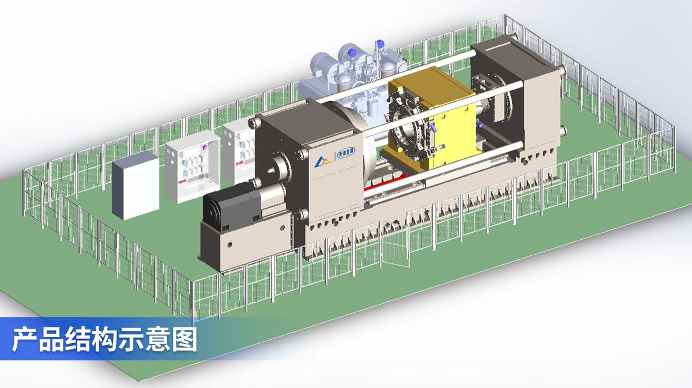
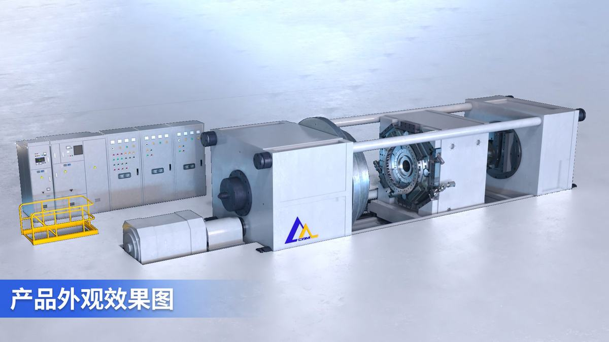
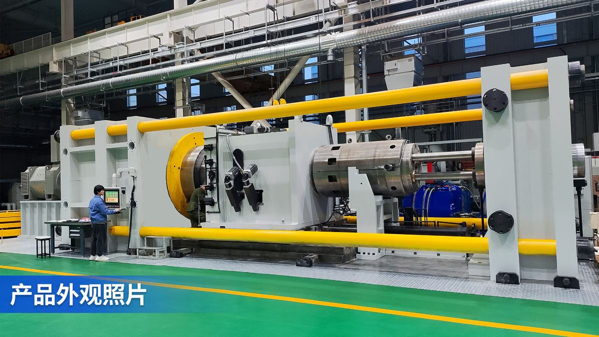

高性能涡扇发动机一直是我国航空工业的重大攻关“难题”。国产商用大飞机C919、C929发动机转子惯性摩擦焊接是发动机制造的核心技术，长期被欧美垄断，并对我国实施严密的技术封锁，严重制约了我国航空发动机和大飞机产业的发展。
高压压气机和涡轮盘轴转子是航空发动机的核心部件，工作温度高达650℃，工作转速高达12000r/min，对转子的焊接质量和焊接精度提出了极高的技术要求。本项目面向我国航空发动机自主研制重大战略需求，在高档数控机床国家科技重大专项和国家自然科学基金等项目支持下，由中国机械总院集团哈尔滨焊接研究所等四家单位组成产学研用创新团队，历时15年，完成航空发动机转子惯性摩擦焊接装备及成套技术颠覆性创新设计，打通大吨位、高精密惯性摩擦焊接装备设计-制造-验证全流程，构建了自主可控的发动机转子惯性摩擦焊接技术体系，成果如下：
项目成果在中国航发沈阳黎明等航发主机厂工程应用。首次实现国产大飞机C919、C929和新型军用战机发动机共6类转子高精度、高质量焊接制造，焊接转子通过了核心机和整机全流程考核验证，为国产大飞机的“中国制造”奠定了坚实基础。项目授权发明专利31项，其中美国专利1项，欧洲专利6项，制定国家标准2项，登记软著3项，发表论文37篇。
项目成果经黑龙江省机械工程学会鉴定，专家一致认为：该项目技术难度大、创新性强，具有自主知识产权，整体技术达到国际先进水平，其中双模式交互控制的高频高压焊接加载技术、压力-位移相协调的焊接变形量精确控制”关键技术达到国际领先水平。本项目创新设计、制造与应用的完美结合，满足了我国航空发动机高性能高精度焊接需求，摆脱了国外对我国大型商用飞机发动机关键焊接技术的长期扼制，驱动我国航空航天与高端装备制造产业集群式升级，实现了设计突破到全产业链的自主可控，践行了“设计创造未来”的理念，筑牢了“国之重器”根基。项目累计创造直接经济效益8.4亿元，经济效益显著，社会效益巨大。
（一）背景
大飞机是实现富国强军的重大战略需求，党中央、国务院高度重视大飞机的研制和航空产业的发展。目前，C919已成功实现商业运营，但发动机依然依赖进口，大飞机C919、C929国产化急需装配“中国心”。然而高性能涡扇发动机一直是我国航空工业的重大攻关“难题”。国产商用大飞机C919、C929发动机转子惯性摩擦焊接是发动机制造的核心技术，长期被欧美国家垄断，并对我国实施技术封锁，严重制约了我国大飞机产业的发展。涡扇发动机的核心部件压气机和涡轮盘轴转子，工作温度高达650℃，工作转速高达12000r/min，对零部件间的焊接质量和焊接精度提出了极高的技术要求。国产千吨级焊接设备缺失、多谱系合金焊接质量保证难、大直径复杂型腔结构焊接精度控制难等问题已成为制约大飞机产业发展的致命痛点。
项目团队历时15年，在高档数控机床专项、省重点研发计划和中国航发集团科技攻关等项目支持下，攻克了大直径复杂型腔转子惯性摩擦焊接成套技术，设计研制了国产首台千吨级高精密惯性摩擦焊接装备，在商用大飞机C919、C929和新型军用战机发动机中成功应用，打破了国外70余年的技术垄断与封锁，实现了关键技术与装备自主可控和发动机制造水平提升。
（二）总体思路
项目聚焦商用大飞机C919、C929和新型战机发动机转子焊接质量保证难和焊接精度控制难的技术瓶颈，开展转子惯性摩擦焊接基础理论-成套工艺-高端装备-应用验证全流程攻关：设计发明了高速重载工况下主轴承载、液压精确加载方法，突破了工件轴心精密检测及调整等精度调控技术，研制了国产首台千吨级高精密惯性摩擦焊机；发明了转子惯性摩擦焊接、焊后热处理性能调控和转子焊接质量评估与无损检测方法，攻克了同质/异质高温合金焊接接头缺陷多、力学性能低等质量控制难题，转子焊接接头静载、动载力学性能达到与母材等强；设计发明了转子焊接成形和精度调控方法，攻克了高温、大扭矩下转子焊接失稳变形等精密焊接技术难题，转子焊后同轴度和端跳精度≤0.1mm、缩短量精度≤±0.2mm。首次实现国产长江系列和新一代军用发动机共6类转子高精度、高质量焊接制造，焊接精度及质量达到或超过国际同类产品技术水平，通过了核心机和整机全流程装机考核验证，为国产大飞机C919、C929和新型战机“中国制造”奠定了坚实的基础。
（三）主要设计创新
设计创新一： 颠覆性创新设计并研制国产首台航空用千吨级高精密惯性摩擦焊接装备
针对大吨位高精密惯性摩擦焊机“卡脖子”难题，设计发明了主轴系统推力轴承协同承载和高频高压焊接精确加载方法，突破了转子焊接前同轴度自动检测-调整、焊接中精密定心等焊接精度调控技术，研制了国产首台航空用千吨级高精密惯性摩擦焊机（图2），成套装备入选2019年工信部、2022年机械工业联合会首台套重大技术装备推广应用目录，入选2022年国资委中央企业科技创新成果产品手册。研制的系列航空用惯性摩擦焊机，在航发主机厂工程化应用，保障了我国涡扇发动机制造安全。
（1）高精密高可靠惯性摩擦焊机主轴系统设计：打破“重载必失精度”的铁律
学科分类：焊接工艺与设备，授权发明专利4件，实用新型1项，见附件1、24-26、32。
主轴系统是焊机的核心部件，决定设备性能及转子的焊接质量。针对主轴系统高压力、大扭矩的极端服役工况及转子高精度焊接要求，不是在现有设备主轴结构基础上“放大尺寸”，而是创新采用推力调心滚动轴承协同承载，一组推力轴承采用固定安装，另一组推力轴承采用液压浮动安装，通过调节系统使得两列推力轴承各承载50% 以上的径向载荷，突破了千吨级焊接力均匀承载的技术难题，同时极大提高轴承寿命及可靠性，发明了大截面（D≥Φ1000mm）、大跨距（L≥2700mm）箱体加工-检测-装配技术，主轴箱体多台阶孔的形位公差≤0.01mm，主轴径跳和端跳精度≤0.03mm，达到国际同类产品水平。
图1 千吨级高精密惯性摩擦焊接装备图
图2 主轴轴向承载原理图
（2）颠覆“高压大吨位必高能耗”的行业铁律：重构液压系统的底层逻辑
学科分类：焊接工艺与设备，授权发明专利3件，软著1项，见附件2、4、10、38。
传统大吨位焊接装备（尤其是千吨级惯性摩擦焊接机）长期被一个“无解悖论”困住：焊接阶段需高压小流量，辅助阶段（装夹、复位）需低压大流量。国外主流方案采用“单泵适配”模式：用一台高压大流量泵兼顾两种需求，而高压小流量-低压大流量双泵协同供油 + 双缸协同加载技术，是对这一“非此即彼”逻辑的彻底颠覆，打破“单泵适配”的路径依赖，且双缸协同加载的“力效倍增”，装机功率比美国MTI同型号产品低29%。这不是“节能优化”，而是通过重构供油逻辑，让“大吨位=高能耗”的行业常识彻底失效。并且设计的力开环-闭环模式交互控制模式，创造了全新的“预测-修正”控制范式。两者协同从而使千吨级焊接力加载响应时间≤0.5s、压力控制精度≤1.1% Fs，焊机的加载性能超过美国MTI同类产品指标，这不是“参数优化”，而是通过打破“开环/闭环非此即彼”的传统模式，让“双高指标”从“不可能” 变成“行业新标准”。
图3 高频高压大焊接力精准控制
（3）从“被动抵消误差”到“源头消除误差链”的焊接精度检测与调控
学科分类：焊接工艺与设备，授权发明专利3件，软著2项，见附件3、5、7、36、37。
传统发动机转子焊接的精度控制，长期陷入“误差累积陷阱”，检测环节依赖人工操作的百分表或激光测头，检测装置自身的导轨平行度、传感器安装偏心等“固有误差”会直接叠加到转子轴心检测结果中，导致“测不准”，调整环节通过人工敲击或液压顶针手动调心，焊中因缺乏实时精度反馈，焊接热变形会进一步放大焊前误差。本项技术的颠覆性在于，不是在传统流程上“修修补补”，而是构建了“误差溯源-主动消除-动态补偿”的全新范式，设计发明了转子焊前同轴、端跳精密检测与自动调整和焊接中精度控制技术及成套装置，创新采用多传感器融合技术对两个零件的轴心位置及相对应角向位置进行精确检测，通过运动学逆解算法计算出5个调整机构的精确位移量，驱动平台完成自动化调整，直径Φ611mm转子焊前检测精度达0.01mm，轴心调整精度达0.02mm，达到国际同类产品精度指标。
图4 同轴度自动检测与对中调整系统
设计创新二：自主设计研发多谱系合金转子惯性摩擦焊接质量控制技术
针对发动机转子焊接质量控制难的问题，建立了双塑性体摩擦副数理模型和多谱系合金高温粘塑性本构模型，阐明了惯性摩擦焊接过程动能-热能间能量转化机制，阐明了同质/异质高温合金惯性摩擦焊接热力耦合机理，设计发明了多谱系合金转子惯性摩擦焊接、焊后热处理性能调控和转子焊接质量评估与无损检测方法，攻克了同质/异质高温合金焊接接头缺陷多、力学性能低等高性能焊接技术难题，转子焊接接头静载、动载力学性能与母材等强，达到美国GE、英国R.R公司产品水平。成套技术获评2021年省职工十大科技创新成果。
（1）从 “经验摸索” 到 “机理穿透”，终结 “多谱系合金焊接性能黑箱”
学科分类：焊接工艺与设备，授权发明专利7件，论文10篇，见附件11、12、14、17-20。
传统多谱系合金（钛合金、镍基高温合金、粉末冶金高温合金）的惯性摩擦焊接，长期陷入“三难困境”（钛合金“易脆化”、镍基变形高温合金“热裂纹敏感”、粉末冶金高温合金“缺陷高发”），这些问题的根源在于，行业对多谱系合金焊接的认知停留在“现象描述”， 缺乏对“动能-热能转化→界面塑性流动→组织性能演变”全链条的机理掌控，导致工艺开发完全依赖“试错法”。本项技术的颠覆性在于，通过建立摩擦副数理模型，首次量化“动能→热能”的转化规律，通过构建“热-力耦合有限元模型”,可视化微观组织演变的动态过程，通过揭示“热-力非稳态界面演化机制”，破解“异质合金焊接性能鸿沟”。发明的摩擦焊接-形变热处理复合强化工艺方法让“焊接过程”成为“性能提升工序”，发明的焊接辅助热源调控工艺方法精准“定制”界面温度场，解决了粉末高温合金转子摩擦焊接“失稳变形”、“粉末型飞溅”等技术难题。开发了同质/异质钛合金TC4、TC17、TA19和同质/异质高温合金GH4169、FGH96等20余种材料组合的焊接工艺，见图7，为中高温服役转子高质量、高性能摩擦焊接奠定工艺基础。首次提出的多谱系合金摩擦焊接相关机理为国际领先水平。
图5 惯性摩擦焊接热力耦合机制 图6 多谱系合金转子惯性摩擦焊接工艺
（2）从“飞边是废料”到“飞边是质量指纹”，破解界面行为的“黑箱难题”
学科分类：焊接工艺与设备，授权发明专利1件，见附件21。
传统摩擦焊接领域，飞边（焊接时从界面挤出的塑性材料）被视为“无用废料”，质量评估完全依赖焊后破坏性检测（如解剖取样做拉伸试验、金相分析），存在滞后性、片面性、成本高的三大固有局限。本技术的颠覆性首先在于认知维度的“范式转移”，揭示了“飞边成形是界面塑性流变的直接映射，并通过工艺试验和数值模拟研究，建立了“材料移除率-飞边参数-接头强度”的三元映射模型。确定了良好冶金结合接头对应的工艺参数窗口，实现了同质/异质钛合金和同质/异质高温合金惯性摩擦焊接质量的准确评估，从而实现了从传统的“破坏性检测”到现在的“非破坏性预知”的技术范式的颠覆。发明的基于塑性流变理论的焊接质量评估方法为国际领先水平。
图7 转子惯性摩擦焊接质量评估技术
（3）让‘不可检测’成为‘过去式’，建立国内首个惯性摩擦焊接头无损检测体系
学科分类：焊接工艺与设备，授权发明专利1件，实用新型2件，见附件15、16、33。
转子焊接质量无损检测精度是保障发动机安全服役的核心技术之一，国内无惯性摩擦焊接头可靠无损检测的相关研究基础。针对发动机转子焊接接头薄壁、窄间隙、多台阶的结构特点，通过重构“试样设计-探头开发-信号识别-工艺规范”的全链条技术逻辑，设计开发了用于超声检测的专用对比试样创造“缺陷信号校准基准”，阵列探头及耦合楔块的缺陷信号高分辨识别方法从“信号海洋”中捞出“缺陷真相”，制定并验证了精确控制超声扫查角度范围、剔除结构性回波信号的检测工艺让超声波“精准命中缺陷”。通过全链条标准化设计，在国内首次实现对发动机转子摩擦焊焊缝紧贴、细小、面状、弥散、取向复杂缺陷的超声波探伤检测，彻底填补国内技术空白并实现从“0 到 1”的跨越。转子惯性摩擦焊焊缝超声探伤无损检测技术达到国际先进水平。
图8 发动机转子超声波无损检测
设计创新三：首创大直径复杂型腔转子高精密惯性摩擦焊接技术
针对发动机转子高焊接精度要求和惯性摩擦焊接复杂热力耦合工况，设计发明了力-位移模式交互控制的缩短量精确控制技术和机械精度与刚度-精密检测与控制-焊接成形协同调控的同轴度和端跳精度控制技术，转子焊后缩短量控制精度≤±0.2mm，同轴度和端跳精度≤0.1mm，实现C919、C929和新型军用战机发动机转子精密焊接制造。转子焊接精度控制技术水平达到国际领先，形成了航空发动机转子关键制造技术自主保障能力。
（1）从“单一参数控制”到“力-位-形协同调控”，破解“重载必失精度”的行业悖论
学科分类：焊接工艺与设备，授权发明专利6件，论文7篇，见附件6、8、9、13、22、23。
发动机转子焊后的三大核心精度（同轴度、端跳、缩短量）直接决定发动机性能，以往焊接过程中大吨位焊接与微米级精度不可兼得，本项技术并非简单提升精度参数，而是通过重构 “力-位移协同控制逻辑”“多维度精度调控体系”，让千吨级载荷、超大扭矩作用下的转子焊接，从“精度失控的高风险操作”变为“可量化、可复现的高精密制造”。焊后缩短量控制精度≤±0.2mm，同轴度和端跳精度≤0.1mm，转子焊后精度优于美国MTI产品指标，技术水平达到国际领先。成套技术入选2021年“科创中国”突破短板关键技术榜单。
图9 大直径多级转子组件惯性摩擦焊接精密制造
（2）首创“焊接-热处理-无损检测-质量评估”一体化工艺链：让“工艺黑箱”变为 “自主可控流程”
学科分类：焊接工艺与设备，授权发明专利5件，见附件27、28、29、30、31。
大飞机发动机是“大国重器”的核心，其转子制造技术直接关系到国家航空工业的自主安全。在该技术出现前，我国大飞机的发动机依赖进口，存在“断供风险”和“天价采购成本”， 本项技术的颠覆性的本质是通过自主可控的制造能力，从“技术受制于人”到“保障国家航空安全”，重构全球航空制造的话语权。本项技术构建了完全自主的“装备-工艺-检测-验证”全链条体系，首次完成多种型号的发动机转子高质量、高精度焊接制造，焊接组件通过了核心机和整机全流程装机考核验证，通过“装备自主化、工艺体系化、验证国产化”，彻底打破了国外对高端航空发动机转子制造的“技术垄断闭环”，让“卡脖子”领域的“中国空白”，变为中国方案。保障了型号的顺利研制，为国产大飞机C919、C929和新型战机“中国制造”奠定了坚实的基础。
图10 已焊接完成的长江系列发动机组件
（四）技术水平、效益及竞争力对比
美国MTI公司是世界上惯性摩擦焊接设备制造的龙头企业，GE公司是世界上最先进的航空发动机制造商。项目成果研制的惯性摩擦焊机技术指标等同或优于MTI产品，制造的发动机转子焊接质量、焊接精度全部优于GE公司同类产品，如表1所示。项目成果累计创造直接经济效益8.4亿元，是国内航空发动机惯性摩擦焊接技术及装备唯一供货商。
表1 同类技术对比表



航空发动机转子惯性摩擦焊,突破欧美封锁,C919/C929 核心制造
焊接装备
间接服务大飞机产业
航空发动机制造战略装备,带动焊接产业
「大飞机心脏」攻关的标志